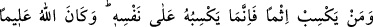
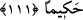
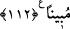

günah işleyip de sonra abdest alır, iki rekât namaz kılar ve istiğfar ederse Allah onu
affeder.” Bunu söyledikten sonra yukarıdaki âyeti okudu.”[142]
Ey sınırsız günah işleyen
O kötü işlerden korkmuyorsun
Tevbe et de Hakk’ın rızâsını bul
Zira tevbeden daha iyi bir şefaatçi yoktur
111- Kim bir günah kazanırsa onu ancak kendi aleyhine kazanmış olur. Allah her
şeyi bilicidir, büyük hikmet sahibidir.
“Kim” günahlardan “bir günah kazanırsa” zararı ve vebali kendisinden başkasına
gitmeyecek şekilde “onu ancak kendi aleyhine kazanmış olur.” O halde dünyâda ve
âhirette o cezâ ve azâba hedef olmaktan sakınsın.
et-Te’vilatü’n-Necmiyye’de şöyle denilmiştir: “Onu ancak kendi aleyhine kazanmış
olur.” Yâni günâhının pası, kişinin berrak kalp aynasında hemen ortaya çıkar ve onu
hakkı görmekten ve hakkı dinlemekten kör ve sağır eder. Nitekim Allah Teâlâ şöyle
buyurmuştur: “Hayır, onların kazandıkları, kalplerini kirletmiştir.” (Mutaffifîn,
83/14) “Allah her şeyi bilicidir, büyük hikmet sâhibidir.” Allah onun yaptığı şeyi bilen
verdiği cezâda da hikmet sâhibi olandır.
112- Kim bir hatâ, ya da günah kazanır da sonra onu bir suçsuzun üzerine atarsa,
muhakkak ki büyük bir iftirâ ve apaçık bir günah yüklenmiş olur.
“Kim” küçük veyâ kasıtsız “bir hata, ya da” büyük veyâ kasıtlı “bir günah kazanır
da sonra onu bir suçsuzun üzerine atarsa” yâni dünyâdaki cezâsını yüklemek için
zikredilen hatâ ve günahtan birini Tu’me’nin yahûdîye ettiği gibi başkasına iftirâ ederse
“muhakkak ki” suçsuz kimseye suç isnâd ettiği için ölçüsü takdir edilemeyecek “büyük
bir iftirâ ve apaçık” çok belli ve çirkin “bir günah yüklenmiş olur.” Çünkü o şahıs suç
işlediği için günahkâr ve işlediği günahı suçsuz bir kimseye attığından iftiracı olmuştur.
Böylece her iki günahı kendisinde toplamıştır.
Suçsuza iftira atmak “bühtan” diye isimlendirilmiştir. Bu kelime hayret ve şaşkınlık
ifâde eder. Çünkü iftirâ edilen kimse, kendisine isnâd edilen suçu duyduğu zaman